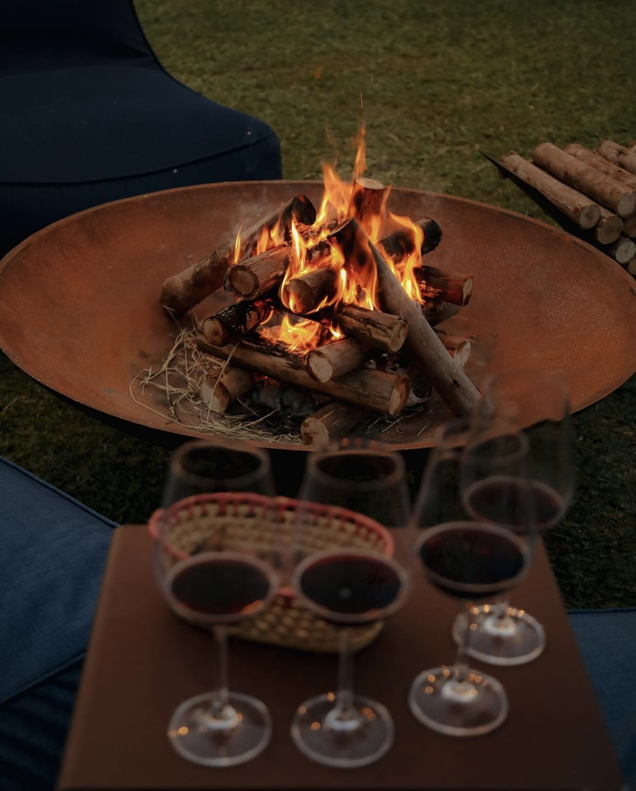
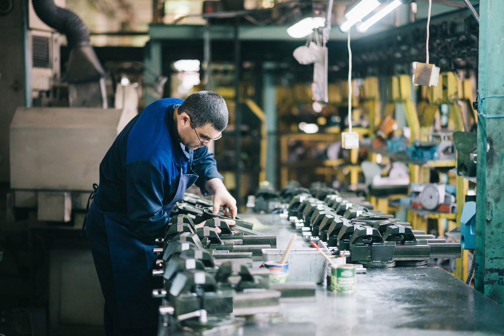
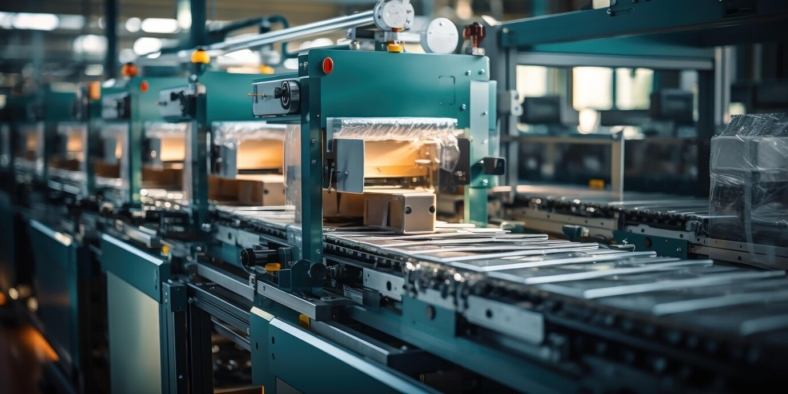
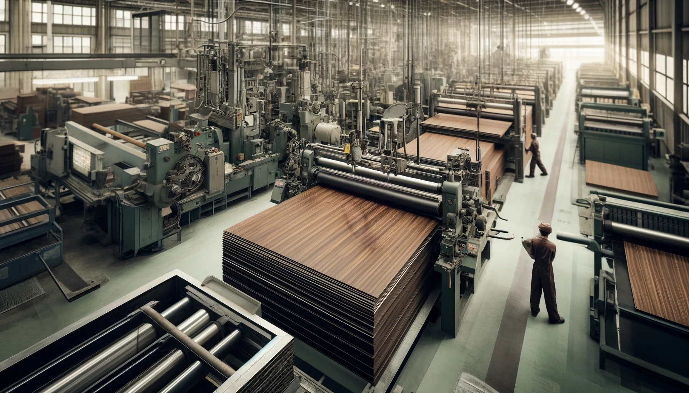
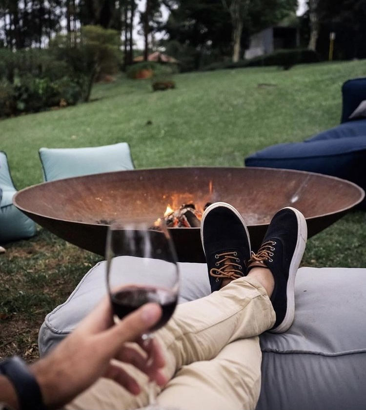

Кто мы и как работаем
ТехФерро — производитель металлических изделий для дома, участка и общественных пространств
Мы проектируем и изготавливаем мангалы, костровые чаши, грили, барбекю-зоны, заборы, ворота и другие изделия из металла — от функциональных
конструкций до декоративных элементов.
Все изделия производятся на собственном оборудовании с контролем качества на каждом этапе: от подбора толщины металла до финальной сборки
и покрытия. Мы работаем как с типовыми моделями, так и с индивидуальными заказами — под задачу, пространство и условия эксплуатации.
ТехФерро — это практичный металл, рассчитанный на долгий срок службы и аккуратный внешний вид в реальном использовании.

ТехФерро — продолжение компетенций СК «Техстрой», сформированных в реальных производственных и строительных задачах
Узнать больше
Начиная с работ для стройки, мы выстроили процессы, запустили собственное производство комплектующих и накопили экспертизу в работе с металлом.
Со временем этот опыт трансформировался в отдельное направление — декоративные металлические изделия, где на первый план выходят точность, эстетика
и конструктивная продуманность.
Сегодня ТехФерро объединяет инженерный подход строительного производства и внимание к деталям, необходимое для создания аккуратных, визуально
выверенных изделий.



Наши принципы
-
( 01 )

Точность и внимание к деталям
Продумываем каждое изделие до мелочей — от пропорций до аккуратности швов и стыков.
-
( 02 )
Технологичный подход к производству
Используем современное оборудование и точные технологии, чтобы результат был стабильным и предсказуемым.
-
( 03 )
Контроль качества на этапах
Проверяем изделия на каждом этапе — от заготовки до финальной сборки и покрытия.
-
( 04 )
Открытость
Показываем производство и процесс работы, чтобы вы понимали, за что платите.